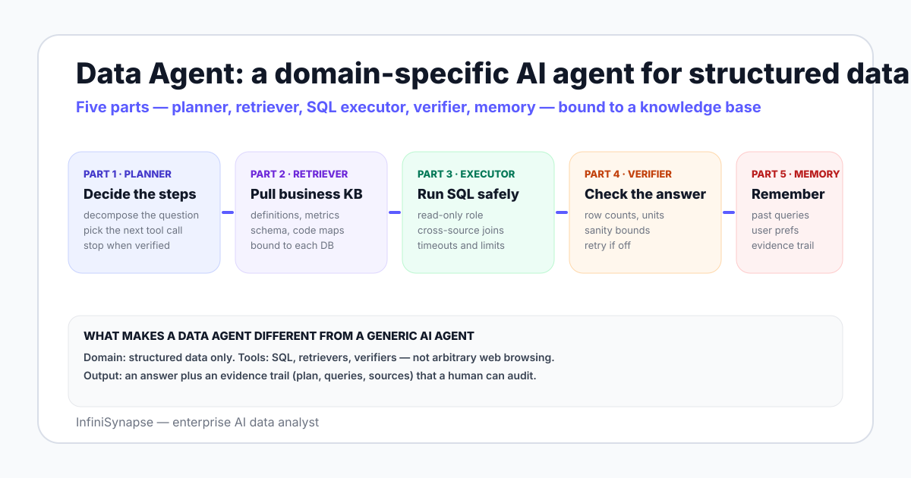

The phrase "data agent" started showing up in vendor materials around 2024 as a way to separate two things that earlier got blurred. One was the chatbot wrapper around NL2SQL — a single-shot translator that converts a sentence into one SQL query. The other was the agentic loop pattern described in the ReAct paper, where a model interleaves reasoning steps with tool calls and feedback. The data agent is the second pattern, scoped to structured data.
By 2026 the term is settling into a working definition that most practitioner-facing material now agrees on. The InfiniSynapse what is a data agent page on the Category cluster is the formal reference; this blog post is the cluster companion that focuses on use cases and architecture diagrams.
The shift mirrors how Anthropic's building effective agents note describes an agent: a system in which an LLM dynamically directs its own processes and tool usage. A data agent applies that idea to the structured-data domain, with tools that are narrower and audit needs that are higher than a general-purpose assistant.

Most working data agents in 2026 share the same five parts. Vendors name them differently — orchestrator, retriever, executor, judge, memory — but the roles are stable.
The planner decomposes a plain-English question into steps. For "show me Q2 revenue by region versus plan", the steps might be: identify which table holds bookings, look up how "region" maps to the customer table, look up how "plan" is defined, draft the SQL, run it, check the totals, and present the answer. The planner is where a data agent looks most like a junior analyst writing a one-page memo.
The retriever is the part most often missing from early NL2SQL systems. Before the agent writes a query it asks: what does this term mean here? Which event counts as a refund? Which status code maps to active? The answers live in a curated knowledge base that the operating team owns. InfiniSynapse calls this "database + knowledge base binding" and treats the binding as the central correctness mechanism, not a nice-to-have.
The executor runs SQL against connected sources — Postgres, MySQL, Snowflake, Supabase, S3 buckets, CSV files. In a working agent it operates with a read-only role, scoped grants, timeouts, and row limits. The executor also handles cross-source joins, which is the operational reason most ad-hoc questions are hard: the data lives in five places.
The verifier checks the output before returning it. Did the row count fall to zero unexpectedly? Are the units consistent? Does the total match a sanity bound from the knowledge base? If something looks off the agent loops back through the planner. The verifier is what makes the output defensible to a finance reviewer rather than a fluent guess.
Memory holds two things. Short-term: the working state of the current investigation — past queries, intermediate results, branching decisions. Long-term: the evidence trail per finished question, plus team-level patterns the agent can reuse. The data agent memory explained page on the Category cluster goes deeper on the trade-offs.
The phrase "AI agent" covers a wider universe — coding assistants, browser automations, customer support routers, computer-use systems. A data agent is one specialization of that idea. Two differences matter most.
| Dimension | Generic AI agent | Data agent |
|---|---|---|
| Tool surface | Open: web, files, code, shell, browsers | Narrow: retrievers, SQL, verifiers, charting |
| Output type | Prose, files, actions in other systems | Numbers, tables, charts with an evidence trail |
| Correctness check | Often external, often after the fact | In-loop verifier on units, bounds, row counts |
| Audit posture | Variable — depends on the task | High by default — finance and security review it |
| Failure cost | Often low (re-run, redo) | Often high (decisions made on the number) |
| Knowledge base | Optional, often general docs | Required, business-specific, bound per source |
The line is not philosophical. It is about which failure mode you are willing to absorb. A generic agent that hallucinates a stack trace is annoying; a data agent that hallucinates a revenue number is dangerous. The narrower tool surface and the in-loop verifier are how working data agents shift the failure cost down to the level a real analytics workflow needs.
NL2SQL — natural-language-to-SQL — is the older idea: take a sentence, return a query. Benchmarks like Spider and BIRD measure how well models do this in isolation. On BIRD, human engineers reach 92.96% execution accuracy and models still trail that bar — which is why the field has shifted from "bigger NL2SQL model" to "wrap it in an agent that retrieves context and verifies".
NL2SQL is one tool inside a data agent. It is not a replacement for the agent itself.
A data agent that uses NL2SQL well does three things the bare model cannot. It pulls business definitions before drafting a query so "active customer" means what the business means. It runs the query and inspects the output rather than handing the SQL back as the answer. And it loops — if the row count is implausible the agent will branch, not stop. The companion piece on AI database query walks through the loop in code.
Five buckets cover most of the production deployments we see across the InfiniSynapse user base and public case material.
Product teams ask "where did sign-ups drop between Tuesday and Friday?" The agent retrieves the funnel definition from the bound knowledge base, runs cohort SQL across the events table, joins to the marketing source table, and surfaces the step where the drop happened. The answer comes with the SQL and the data slice so a PM can defend the conclusion in a meeting.
"Show me 30-day retention for users who first signed up in Q2 versus Q1, split by acquisition channel." This is a question that almost never sits on a dashboard but always sits in a PM's head. A data agent answers it on demand; a BI tool needs an analyst to model the view first.
"Why did Q2 EMEA revenue come in 3% under plan?" The agent pulls the plan definition, runs the actuals query, joins to the customer table for the EMEA cut, and produces the deal-level list driving the variance. Finance teams accept this because the agent returns the queries and the rows behind each line — the evidence trail is the deliverable.
"Which SKUs are at risk of stocking out in 14 days given the open POs?" The agent joins ERP inventory, open purchase orders, and sales velocity, applies the lead time rules from the knowledge base, and returns the at-risk list. This is the kind of question that used to require an analyst spinning up a notebook for two hours.
"How does NPS correlate with renewal across the top 50 accounts last year?" The agent pulls NPS from one source, renewals from another, and the top-50 list from the CRM. The cross-source join is the work; the answer is the by-product. Companion guides on MySQL data analysis with AI and PostgreSQL data analysis with AI show the same pattern on specific databases.
Three patterns recur in deployments that fail.
If your team has zero appetite for owning a knowledge base, a data agent will return SQL that runs and numbers that do not match the business. That is the most common reason a pilot stalls. See the data agent manifesto for the long-form argument on why the knowledge base is the product.
The four-line operational answer most security teams accept:
The NIST AI Risk Management Framework and ISO/IEC 42001 give a shared structure security teams accept when approving a data agent in regulated environments. Use them to frame the rollout, not to slow it down.
InfiniSynapse runs the five-part pattern on Postgres, MySQL, Snowflake, Supabase, S3, and CSV out of the box. Connect a database read-only, seed a small knowledge base, and run one open-ended question — review the plan, the queries, and the evidence trail before deciding whether a data agent belongs in your stack.
Try InfiniSynapse onlineLast updated: 2026-06-28 · Next scheduled review: 2026-09-28
The architecture and use case sections on this page are grounded in vendor documentation (InfiniSynapse, other data agent vendors), public benchmarks (BIRD, Spider), agent research notes (Anthropic, ReAct), and governance frameworks (NIST AI RMF, ISO/IEC 42001, EU AI Act). The five-part architecture is a working consolidation across published systems; specific vendors may merge or split these parts.
Conflict of interest: InfiniSynapse publishes this guide and sells a data agent. To reduce bias, the page includes a section on poor fits, an honest filter for choosing between a data agent and a BI tool, and external sources for every numeric claim.
Update cadence: Reviewed every 90 days for terminology, product changes, benchmark figures, and schema consistency.